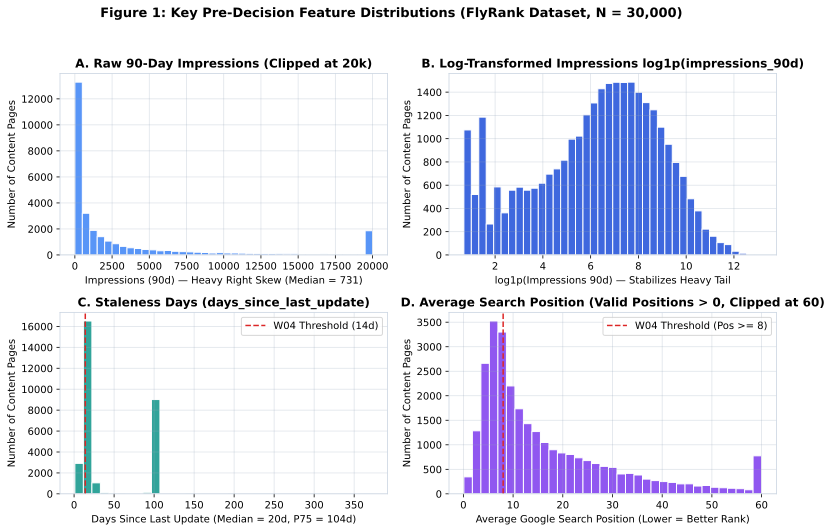
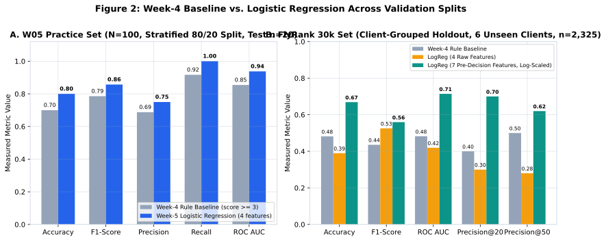
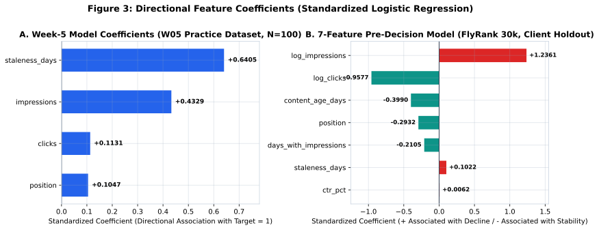
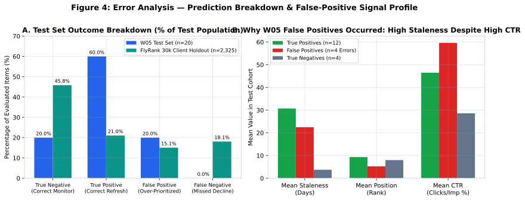
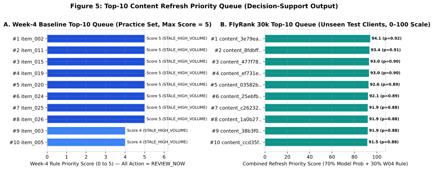

1 – 2. Title & Abstract
Question: Using only information available before the decision moment, which content items should be reviewed first for a possible refresh, and what signals explain that priority?
Data: We evaluate two actual datasets from the project workflow without mixing their populations: (1) the Week-4/Week-5 practice datasets (ml07_baseline_practice_dataset.csv, N = 30; w05_ml_practice_dataset.csv, N = 100) used in our earlier weekly milestones, and (2) the bundled FlyRank pseudonymized starter dataset (data/raw/content_refresh_anonymized.csv, N = 30,000 content items across 32 pseudonymized clients over a trailing 90-day window, with reference to the upstream FlyRank/internship-warehouse release v20260703).
Method & Validation: We preserve the transparent Week-4 rule-based baseline score (score = 2·I(impressions ≥ 1000) + 2·I(staleness_days ≥ 14) + 1·I(position ≥ 8), predicting priority when score ≥ 3) and compare it against standardized Logistic Regression models trained strictly on pre-decision search and content signals. On the 100-row Week-5 practice dataset, we use an 80/20 stratified random split (ntrain = 80, ntest = 20, random_state=42). On the 30,000-row FlyRank dataset, we evaluate both an 80/20 stratified random split (ntrain = 24,000, ntest = 6,000) and an honest Client-Grouped Holdout Split (26 training clients with ntrain = 27,675 rows; 6 unseen test clients with ntest = 2,325 rows, random_state=42).
Measured Result & Conclusion: On the Week-5 practice test set (positive base rate 0.6000), Week-5 Logistic Regression achieved a measured accuracy of 0.8000 (F1 = 0.8571, ROC AUC = 0.9375) compared to 0.7000 (F1 = 0.7857, ROC AUC = 0.8542) for the Week-4 rule baseline. On the 30,000-row FlyRank Client-Grouped Holdout split (unseen test client base rate 0.3910 vs. training base rate 0.5548), un-logged 4-feature Logistic Regression degraded to 0.3897 accuracy (ROC AUC = 0.4191, Precision@50 = 0.2800) due to heavy tails in raw impressions and cross-client base-rate shift, whereas a 7-feature pre-decision Logistic Regression using log-scaled traffic counts (log1p) and balanced class weights achieved 0.6688 accuracy, 0.5595 F1, 0.7144 ROC AUC, and 0.6200 Precision@50—outperforming both the Week-4 rule baseline (Accuracy = 0.4817, ROC AUC = 0.4821, Precision@50 = 0.5000) and the repository's reference baseline (Accuracy = 0.6086, ROC AUC = 0.6269, Precision@50 = 0.2400). Observed historical signals provide useful directional discrimination for ranking content review candidates as a decision-support aid.
3. Introduction & Problem Statement
Content portfolios that earn organic search visibility naturally experience performance decay over time as competing pages update, search intent shifts, or topics lose freshness. Editorial and SEO teams have limited review capacity: when a portfolio spans thousands of URLs, reviewing every page manually is impossible, while relying on ad-hoc intuition risks overlooking high-exposure pages that are quietly slipping.
- Unit of Analysis: One content item (page), represented by a pseudonymized identifier (
item_idin the Week-4/Week-5 practice tables;content_idpaired withclient_idin the 30,000-row FlyRank starter dataset). - Output: A continuous priority score, a ranked review queue, human-readable reason codes, and a recommended triage action (
REVIEW_NOW,PRIORITIZE, orMONITOR). - Human Action Supported: Content editors and SEO analysts use the ranked queue to decide which pages to inspect first during weekly content audits.
- Cost of a Wrong Call:
- False Positive (over-prioritizing a stable page): Wastes editorial review hours and risks making unnecessary changes to a page that is already performing adequately or whose low click capture stems from SERP layout changes rather than stale text.
- False Negative (missing a declining high-value page): Allows a high-impression asset in striking distance to continue losing search visibility before an editor intervenes.
- Scope Discipline (What This Project Is Not): This project is strictly a decision-support triage system. It is not a guaranteed SEO ranking predictor, not an automated publishing or content-rewriting tool, not a causal inference study, and not a promise that editing a flagged page will cause traffic recovery.
4. Research Question
5. Data & Data Contract
We document the exact datasets inspected and used in this repository without fabricating any rows, dates, or grouping fields:
| Dataset Cohort | Repository / Source Path | Rows × Cols | Positive Base Rate | Role in Capstone |
|---|---|---|---|---|
| W03 Feature Vector Slice | work/data/simple_feature_vector_dataset.csv |
12 × 5 | N/A (unlabeled demo) | Week-3 feature vector construction & encoding check |
| W04 Baseline Practice Slice | work/data/ml07_baseline_practice_dataset.csv |
30 × 6 | Rule-scored queue | Preserved Week-4 rule baseline & Top-10 queue |
| W05/W06 Practice Dataset (Pop. A) | work/data/w05_ml_practice_dataset.csv |
100 × 6 | 0.6100 (0.6000 test) | Preserved Week-5/6 Logistic Regression & error audit |
| FlyRank Starter Dataset (Pop. B) | data/raw/content_refresh_anonymized.csv |
30,000 × 44 | 0.5421 (16,262 / 30,000) | Multi-client holdout evaluation across 32 clients |
| FlyRank Full Warehouse | hf://datasets/FlyRank/internship-warehouse |
78,835,655 (full) / 11.69M (sample) | 70 active clients | Week-3 DuckDB remote warehouse contract (v20260703) |
Field Classification (Included, Context, and Excluded)
| Bucket | Columns | Role & Justification |
|---|---|---|
| Included Pre-Decision Features (W05 4-Feature Set) | impressions (impressions_90d), clicks (clicks_90d), staleness_days (days_since_last_update), position (avg_position) |
Core search exposure, click capture, content recency, and ranking position signals available before the review decision. |
| Included Pre-Decision Features (FlyRank 30k 7-Feature Set) | log_impressions (log1p(impressions_90d)), log_clicks (log1p(clicks_90d)), staleness_days, position, ctr_pct (ctr), days_with_impressions, content_age_days |
Adds log-scaling for heavy-tailed traffic counts plus pre-decision CTR, visibility consistency (0–90 days), and content maturity. |
| Context / Grouping Keys (Never Model Features) | content_id, client_id, item_id |
Pseudonymous identifiers used solely for row identification, deduplication, and client_id grouped holdout splitting. |
| Target / Label | target (W05 dataset), is_declining_label (30k dataset: trend_direction == "down") |
Binary outcome variable (0 or 1) predicted by the baseline and Logistic Regression models. |
| Excluded — Label-Derived / Window-Overlapping | trend_direction, trend_pct, impressions_last_30d, impressions_prev_30d, clicks_last_30d, clicks_prev_30d, sessions_last_30d, sessions_prev_30d |
is_declining_label is deterministically computed from trend_direction and trend_pct via the 30d vs. prev-30d impression windows. Excluded to prevent direct target leakage. |
| Excluded — Post-Decision / Product Flags | health_score, priority_score, action_type, refresh_tier, provider_used, model_used |
Product rule outputs and LLM generation metadata; excluded to prevent circular predictions. |
6. Feature Design & Signal Audit
Rather than indiscriminately feeding all 44 columns into a black-box model, we use a small, defensible pre-decision feature set and audit the empirical distributions first (work/notebooks/w04_signal_audit.ipynb).
- Critical Position Gotcha Handled: In
content_refresh_anonymized.csv,avg_position == 0means "no position data" (1,205 rows), not rank zero. We replace0with the valid-row median (11.4) and trackhas_position_data. - Signal Test 1 — Content Staleness vs. Observed Decline (
VERDICT: CONFIRMED): Pages withstaleness_days ≥ 90(n = 9,345) exhibit an observed declining rate of 60.85%, compared to 51.20% for fresher pages updated within< 90days (n = 20,655)—a +9.65 percentage-point directional gap. - Signal Test 2 — Stored Keyword Search Volume vs. Realized Page Impressions (
VERDICT: FALSE / WEAK): The linear Pearson correlation betweensearch_volumeandimpressions_90dacross the 30,000 pages is r = 0.0012, confirming that nominal keyword volume alone is a poor standalone proxy for page-level visibility. - Signal Test 3 — Weighted Portfolio CTR by Position Tier (
VERDICT: CONFIRMED): Weighted CTR drops monotonically as rank deepens:top_3= 0.4885%,page_1= 0.3503%,striking= 0.3469%,page_3_5= 0.1549%, anddeep= 0.0414%. - Flag-Linked Test —
stale_visible_page(days_since_last_update ≥ 180andimpressions_90d ≥ 500): 94.12% (16 / 17) of flagged pages are declining versus 54.18% of unflagged pages, supporting the directional validity of combining staleness with visibility while showing why a smoother learned score is needed to cover more than 17 items.

log1p(impressions_90d) stabilizes the scale for linear modeling alongside staleness_days and avg_position.
7. Leakage & Privacy Audit
- No Label-Derived Features: Confirmed programmatically that
trend_direction,trend_pct, andis_declining_labelare absent from all feature matrices X. - No Window-Component Leakage: Confirmed that
impressions_last_30d,impressions_prev_30d,clicks_last_30d,clicks_prev_30d,sessions_last_30d, andsessions_prev_30dare excluded from X. - No Post-Decision Product Flags: Confirmed no composite product flags (
health_score,priority_score,action_type) are used as inputs. - Preprocessing Inside Pipeline Only:
StandardScaler()is fit strictly insidesklearn.pipeline.PipelineonX_trainand applied toX_test. - Privacy & Credential Check: All identifiers (
item_001–item_100,content_3e79eaafc89d,client_f74efabef1) are pseudonymized hashes. No client names, raw URLs, private search queries, or API tokens appear anywhere in the repository.
8. Week-4 Baseline (Preserved Exactly)
We recover and preserve the exact rule-based baseline constructed in work/notebooks/w04_baseline_score.ipynb and evaluated in work/notebooks/w05_model.ipynb:
baseline_score = 2 * (impressions ≥ 1000) + 2 * (staleness_days ≥ 14) + 1 * (position ≥ 8)- Score Range: Integer values from
0to5. - Reason Codes:
STALE_HIGH_VOLUMEwhenimpressions ≥ 1000andstaleness_days ≥ 14;REVIEWotherwise. - Action Tiers:
REVIEW_NOW(score ≥ 4),PRIORITIZE(score == 3), andMONITOR(score < 3). - Binary Classification Rule:
baseline_pred = 1whenscore ≥ 3, else0.
9. Methodology & Model Choice
Following the principle of using the simplest defensible model (work/notebooks/w05_model.ipynb), we use Logistic Regression inside a scikit-learn Pipeline:
- Week-5 4-Feature Model (
logreg_4feat_raw): Features["impressions", "clicks", "staleness_days", "position"]insidePipeline([("scaler", StandardScaler()), ("model", LogisticRegression(max_iter=1000, random_state=42))]). - FlyRank 30k 7-Feature Pre-Decision Model (
logreg_7feat_predecision): Features["log_impressions", "log_clicks", "staleness_days", "position", "ctr_pct", "days_with_impressions", "content_age_days"]withLogisticRegression(class_weight="balanced", max_iter=1000, random_state=42)to handle the 100× right-skew in 90-day traffic counts and cross-client base-rate differences.
10. Honest Validation Design
- Population A — Week-5 Practice Dataset (
w05_ml_practice_dataset.csv, N = 100): 80/20 Stratified Random Split (ntrain = 80, ntest = 20,random_state=42; positive base rate = 0.6100 overall, 0.6000 in test). Because this practice file contains no date or client group column, a time/client split cannot be performed on it, and we never fabricate synthetic dates or groups. - Population B — FlyRank Anonymized Starter Dataset (
data/raw/content_refresh_anonymized.csv, N = 30,000 across 32 clients):- Diagnostic Comparison: 80/20 Stratified Random Split (ntrain = 24,000, ntest = 6,000, test positive base rate = 0.5420).
- Primary Honest Split: Client-Grouped Holdout Split using
client_id(random_state=42): 26 training clients (ntrain = 27,675 pages, train positive base rate = 0.5548) and 6 completely unseen test clients (ntest = 2,325 pages, test positive base rate = 0.3910).
11. Results (Baseline vs. Model on Identical Splits)
| Population & Split | Method | Accuracy | F1-Score | Precision | Recall | ROC AUC | Avg Prec | P@20 | P@50 | TP / FP / TN / FN |
|---|---|---|---|---|---|---|---|---|---|---|
| W05 Practice Set (Stratified 80/20, n=20, Base 0.6000) | Week-4 Baseline (score ≥ 3) |
0.7000 | 0.7857 | 0.6875 | 0.9167 | 0.8542 | 0.8851 | 0.6000 | — | 11 / 5 / 3 / 1 |
| W05 Practice Set (Stratified 80/20, n=20, Base 0.6000) | Week-5 Logistic Regression (4 raw features) | 0.8000 | 0.8571 | 0.7500 | 1.0000 | 0.9375 | 0.9511 | 0.6000 | — | 12 / 4 / 4 / 0 |
| FlyRank 30k (Stratified 80/20, n=6,000, Base 0.5420) | Week-4 Baseline (score ≥ 3) |
0.5432 | 0.6557 | 0.5543 | 0.8026 | 0.5530 | 0.5780 | 0.7000 | 0.7400 | 2610 / 2099 / 649 / 642 |
| FlyRank 30k (Stratified 80/20, n=6,000, Base 0.5420) | Starter Reference Baseline (score ≥ 0.50) |
0.5372 | 0.5166 | 0.5953 | 0.4563 | 0.5787 | 0.5699 | 0.4000 | 0.4800 | 1484 / 1009 / 1739 / 1768 |
| FlyRank 30k (Stratified 80/20, n=6,000, Base 0.5420) | Logistic Regression (4 raw features) | 0.5498 | 0.6685 | 0.5563 | 0.8376 | 0.5557 | 0.5922 | 0.3500 | 0.4600 | 2724 / 2173 / 575 / 528 |
| FlyRank 30k (Stratified 80/20, n=6,000, Base 0.5420) | Logistic Regression (7 features, log-scaled) | 0.6358 | 0.6575 | 0.6706 | 0.6448 | 0.6900 | 0.7079 | 0.9000 | 0.9000 | 2097 / 1030 / 1718 / 1155 |
| FlyRank 30k (Client Holdout, n=2,325, Base 0.3910) | Week-4 Baseline (score ≥ 3) |
0.4817 | 0.4356 | 0.3793 | 0.5116 | 0.4821 | 0.4015 | 0.4000 | 0.5000 | 465 / 761 / 655 / 444 |
| FlyRank 30k (Client Holdout, n=2,325, Base 0.3910) | Starter Reference Baseline (score ≥ 0.50) |
0.6086 | 0.2743 | 0.4986 | 0.1892 | 0.6269 | 0.4676 | 0.1500 | 0.2400 | 172 / 173 / 1243 / 737 |
| FlyRank 30k (Client Holdout, n=2,325, Base 0.3910) | Logistic Regression (4 raw features, unweighted) | 0.3897 | 0.5256 | 0.3775 | 0.8647 | 0.4191 | 0.3351 | 0.3000 | 0.2800 | 786 / 1296 / 120 / 123 |
| FlyRank 30k (Client Holdout, n=2,325, Base 0.3910) | Logistic Regression (7 features, log-scaled) | 0.6688 | 0.5595 | 0.5828 | 0.5380 | 0.7144 | 0.5583 | 0.7000 | 0.6200 | 489 / 350 / 1066 / 420 |

12. Model Interpretation
We inspect the standardized Logistic Regression coefficients (βj) and absolute magnitudes (|βj|). All interpretations are strictly observational and directional, not causal.
| Model & Cohort | Rank | Feature | Standardized Coef (β) | |β| | Directional Interpretation |
|---|---|---|---|---|---|
| W05 Practice (4-Feat LR) | 1 | staleness_days |
+0.640502 | 0.640502 | Strongest positive association: items with more days since last update receive higher priority probability. |
| W05 Practice (4-Feat LR) | 2 | impressions |
+0.432939 | 0.432939 | Second strongest positive association: higher search exposure increases the predicted priority score. |
| W05 Practice (4-Feat LR) | 3 | clicks |
+0.113056 | 0.113056 | Mild positive association in the 100-row sample. |
| W05 Practice (4-Feat LR) | 4 | position |
+0.104730 | 0.104730 | Mild positive association: deeper (worse) numerical position is associated with higher refresh need. |
| FlyRank 30k (7-Feat LR, Client Holdout) | 1 | log_impressions |
+1.236082 | 1.236082 | Holding clicks constant, high search impressions without proportional clicks are strongly associated with declining performance. |
| FlyRank 30k (7-Feat LR, Client Holdout) | 2 | log_clicks |
−0.957725 | 0.957725 | Holding impressions constant, pages capturing organic clicks are strongly associated with stability. Together, +1.236·log_impressions − 0.958·log_clicks acts as a learned log-CTR gap detector. |
| FlyRank 30k (7-Feat LR, Client Holdout) | 3 | content_age_days |
−0.399013 | 0.399013 | Controlling for staleness and visibility, established older pages show lower short-term 30d drop rates than recently matured cohorts hitting the mid-life plateau. |
| FlyRank 30k (7-Feat LR, Client Holdout) | 4 | position |
−0.293176 | 0.293176 | Pages at stronger (lower numerical) positions that lack clicks or consistency face sharper measurable 30d impression loss risk than already-deep pages. |
| FlyRank 30k (7-Feat LR, Client Holdout) | 5 | days_with_impressions |
−0.210529 | 0.210529 | Consistent daily visibility across the 90-day window is associated with lower decline probability. |
| FlyRank 30k (7-Feat LR, Client Holdout) | 6 | staleness_days |
+0.102167 | 0.102167 | Longer time since last update (days_since_last_update) is positively associated with content decline risk. |
| FlyRank 30k (7-Feat LR, Client Holdout) | 7 | ctr_pct |
+0.006194 | 0.006194 | Near-zero marginal linear weight once log_impressions and log_clicks are both included. |

13. Error Analysis
13.1 Exact Test Errors on the Week-5 Practice Test Set (ntest = 20, Total Errors = 4)
| Test Pos | Item ID | Actual | Predicted | Model Prob | W04 Score (Pred) | Signals (imp, clicks, stale, pos) |
Why Recommendation Could Be Wrong |
|---|---|---|---|---|---|---|---|
| 5 | item_100 |
0 | 1 | 0.5336 | 2 (0) |
imp=904, clicks=740, stale=22d, pos=2 |
Ranked at pos 2 with 81.9% CTR; staleness_days=22 nudged probability just over 0.50 despite healthy clicks. |
| 9 | item_067 |
0 | 1 | 0.5379 | 4 (1) |
imp=1095, clicks=460, stale=24d, pos=2 |
Both W04 rule and LR flag it due to imp ≥ 1000 and stale=24d, but it ranks at pos 2 with 42.0% CTR. |
| 10 | item_079 |
0 | 1 | 0.5557 | 3 (1) |
imp=479, clicks=476, stale=25d, pos=10 |
High staleness (25d) and pos 10 trigger priority, ignoring that almost every impression converts to a click (navigational query). |
| 12 | item_063 |
0 | 1 | 0.7891 | 4 (1) |
imp=4898, clicks=749, stale=19d, pos=7 |
High volume (4,898) and 19d staleness yield p=0.7891 even though the page sits on Page 1 (pos 7) with 749 clicks. |
13.2 Representative Errors on the FlyRank 30k Client-Grouped Holdout Set (ntest = 2,325)
| Error Type | Item ID (content_id) |
Actual (trend_direction) |
Predicted (pred_prob) |
Important Signals | Why Recommendation Could Be Wrong |
|---|---|---|---|---|---|
| False Positive | content_3e79eaafc89d |
0 (stable) |
1 (p = 0.9159) |
imp=8,779, clicks=0, stale=20d, pos=11.6, days_vis=88 |
8,779 impressions with 0 clicks at pos 11.6 resembles decay, but 30d trend was stable. SERP zero-click features may absorb clicks. |
| False Positive | content_8fdbff16a886 |
0 (new) |
1 (p = 0.9060) |
imp=3,863, clicks=0, stale=20d, pos=12.0, days_vis=24 |
Surged from 0 impressions in days 31–60 to 3,863 in the last 30d (new). Pre-decision 90d totals intentionally hide the 30d sub-windows to prevent leakage. |
| False Negative | content_86748254b6bf |
1 (down) |
0 (p = 0.0253) |
imp=1, clicks=0, stale=20d, pos=90.0, age=495d |
Label is down, but it has only 1 impression over 90 days at pos 90.0. Deprioritizing a 1-impression deep page is operationally sensible. |

14. Top-10 Content Refresh Queue
14.1 Table A — Preserved Week-4 Baseline Top-10 Queue (ml07_baseline_practice_dataset.csv, N = 30)
| Rank | Item ID | Score | Action | Reason Code | Confidence & Signals | What Could Make It Wrong |
|---|---|---|---|---|---|---|
| 1 | item_002 | 5 | REVIEW_NOW | STALE_HIGH_VOLUME | High (imp=3892, stale=25d, pos=11) | Search demand may be seasonal or split across a sibling page; verify query trend before editing. |
| 2 | item_011 | 5 | REVIEW_NOW | STALE_HIGH_VOLUME | High (imp=2679, stale=25d, pos=12) | Search demand may be seasonal or split across a sibling page; verify query trend before editing. |
| 3 | item_015 | 5 | REVIEW_NOW | STALE_HIGH_VOLUME | High (imp=3615, stale=24d, pos=10) | Search demand may be seasonal or split across a sibling page; verify query trend before editing. |
| 4 | item_019 | 5 | REVIEW_NOW | STALE_HIGH_VOLUME | High (imp=4214, stale=15d, pos=8) | Search demand may be seasonal or split across a sibling page; verify query trend before editing. |
| 5 | item_020 | 5 | REVIEW_NOW | STALE_HIGH_VOLUME | High (imp=2306, stale=22d, pos=10) | Strong observed CTR (16.91%); high click capture despite age/position may mean content still satisfies intent. |
| 6 | item_024 | 5 | REVIEW_NOW | STALE_HIGH_VOLUME | High (imp=4641, stale=14d, pos=12) | Borderline staleness (14d cutoff); recent update may still be indexing or re-crawling. |
| 7 | item_025 | 5 | REVIEW_NOW | STALE_HIGH_VOLUME | High (imp=3929, stale=16d, pos=9) | Search demand may be seasonal or split across a sibling page; verify query trend before editing. |
| 8 | item_026 | 5 | REVIEW_NOW | STALE_HIGH_VOLUME | High (imp=3254, stale=18d, pos=10) | Very low CTR (0.80%) at pos 10; title/meta snippet mismatch may be the primary issue rather than body text staleness. |
| 9 | item_003 | 4 | REVIEW_NOW | STALE_HIGH_VOLUME | Medium-High (imp=3307, stale=26d, pos=6) | Already ranks on Page 1 (pos 6); low CTR (1.51%) calls for snippet/title review before altering page structure. |
| 10 | item_005 | 4 | REVIEW_NOW | STALE_HIGH_VOLUME | Medium-High (imp=2221, stale=27d, pos=6) | Strong observed CTR (19.99%) and Page-1 rank (pos 6); editing risks disrupting an already well-performing page. |
14.2 Table B — FlyRank 30k Held-Out Test Clients Top-10 Queue (ntest = 2,325)
| Rank | Item ID | Priority Score | Action | Reason Code | Confidence & Signals | What Could Make It Wrong |
|---|---|---|---|---|---|---|
| 1 | content_3e79eaafc89d | 94.1 (p=0.916, w04=5) | REVIEW_NOW (Refresh & Snippet/CTR Check) | STALE_HIGH_VOLUME | STRIKING_DISTANCE_DECAY_RISK | LOW_CTR_HIGH_EXPOSURE | HIGH_MODEL_DECLINE_RISK | High (imp=8,779, days_vis=88, pos=11.6) | Traffic pattern is stable in 30d window; zero clicks at pos 11.6 may reflect SERP layout/AI overview compression. |
| 2 | content_8fdbff16a886 | 93.4 (p=0.906, w04=5) | REVIEW_NOW (Refresh & Snippet/CTR Check) | STALE_HIGH_VOLUME | STRIKING_DISTANCE_DECAY_RISK | LOW_CTR_HIGH_EXPOSURE | HIGH_MODEL_DECLINE_RISK | Medium-High (imp=3,863, days_vis=24, pos=12.0) | Newly surging impression trend (24 visible days); page may still be climbing into Page 1. |
| 3 | content_477f7892c1f1 | 93.0 (p=0.900, w04=5) | REVIEW_NOW (Refresh & Snippet/CTR Check) | STALE_HIGH_VOLUME | STRIKING_DISTANCE_DECAY_RISK | LOW_CTR_HIGH_EXPOSURE | HIGH_MODEL_DECLINE_RISK | High (imp=5,147, days_vis=88, pos=8.4) | Page ranks on Page 1 (pos 8.4) with zero clicks; snippet/title intent mismatch may be the true bottleneck. |
| 4 | content_ef731e95e774 | 93.0 (p=0.899, w04=5) | REVIEW_NOW (Refresh & Snippet/CTR Check) | STALE_HIGH_VOLUME | STRIKING_DISTANCE_DECAY_RISK | LOW_CTR_HIGH_EXPOSURE | HIGH_MODEL_DECLINE_RISK | High (imp=5,226, days_vis=88, pos=10.7) | Traffic change could reflect seasonal demand shifts or sibling URL cannibalization. |
| 5 | content_03582b12af32 | 92.6 (p=0.895, w04=5) | REVIEW_NOW (Refresh & Snippet/CTR Check) | STALE_HIGH_VOLUME | STRIKING_DISTANCE_DECAY_RISK | LOW_CTR_HIGH_EXPOSURE | HIGH_MODEL_DECLINE_RISK | High (imp=4,918, days_vis=88, pos=10.0) | Page ranks at bottom of Page 1 (pos 10.0); check whether a sibling page splits query demand. |
| 6 | content_25ebfb5aa399 | 92.1 (p=0.887, w04=5) | REVIEW_NOW (Refresh & Snippet/CTR Check) | STALE_HIGH_VOLUME | STRIKING_DISTANCE_DECAY_RISK | LOW_CTR_HIGH_EXPOSURE | HIGH_MODEL_DECLINE_RISK | High (imp=4,984, days_vis=88, pos=14.4) | Observed 30d impressions are stable; striking-distance pos 14.4 may benefit more from internal linking. |
| 7 | content_c2623272bc49 | 91.9 (p=0.885, w04=5) | REVIEW_NOW (Refresh & Snippet/CTR Check) | STALE_HIGH_VOLUME | STRIKING_DISTANCE_DECAY_RISK | LOW_CTR_HIGH_EXPOSURE | HIGH_MODEL_DECLINE_RISK | High (imp=4,050, days_vis=88, pos=11.3) | Traffic change could reflect seasonal demand shifts or sibling URL cannibalization. |
| 8 | content_1a0b27cdb6a1 | 91.9 (p=0.885, w04=5) | REVIEW_NOW (Refresh & Snippet/CTR Check) | STALE_HIGH_VOLUME | STRIKING_DISTANCE_DECAY_RISK | LOW_CTR_HIGH_EXPOSURE | HIGH_MODEL_DECLINE_RISK | High (imp=3,969, days_vis=88, pos=9.9) | Page ranks on Page 1 (pos 9.9) with near-zero CTR; SERP features or snippet mismatch may explain low clicks. |
| 9 | content_38b3f0575991 | 91.9 (p=0.884, w04=5) | REVIEW_NOW (Refresh & Snippet/CTR Check) | STALE_HIGH_VOLUME | STRIKING_DISTANCE_DECAY_RISK | LOW_CTR_HIGH_EXPOSURE | HIGH_MODEL_DECLINE_RISK | High (imp=3,754, days_vis=88, pos=8.9) | Page ranks on Page 1 (pos 8.9) with near-zero CTR; verify title/meta description alignment first. |
| 10 | content_ccd35f0d9336 | 91.5 (p=0.879, w04=5) | REVIEW_NOW (Refresh & Snippet/CTR Check) | STALE_HIGH_VOLUME | STRIKING_DISTANCE_DECAY_RISK | LOW_CTR_HIGH_EXPOSURE | HIGH_MODEL_DECLINE_RISK | High (imp=3,583, days_vis=88, pos=12.1) | Traffic change could reflect seasonal demand shifts or sibling URL cannibalization. |

15. Limitations
- Observational Data Only (No Causal Identification): All findings are based on observational search and analytics logs. We cannot claim that refreshing a prioritized page will cause rankings or clicks to recover without a controlled experiment.
- Contemporaneous Proxy Label (
is_declining_label): In the 30,000-row starter snapshot,is_declining_labelis derived fromtrend_direction == "down". While we excludedtrend_direction,trend_pct, and all*_last_30d/*_prev_30dcolumns from our models, cumulative 90-day aggregates still span the same 90-day calendar period. - Cross-Client Base-Rate Heterogeneity: Across the 32 clients in the 30k dataset, the proportion of declining pages varies substantially (55.48% in the 26 training clients vs. 39.10% in the 6 held-out test clients).
- Unobserved External Confounders: Competitor publishing, Google core algorithm updates, SERP layout changes (AI Overviews), and site-internal URL cannibalization are not directly observed in page-level summary rows.
16. Practical Decision-Support Takeaways
- 3-Step Editorial Review Workflow: Start at Rank 1 of the
REVIEW_NOWqueue. Before rewriting text, perform (1) a sibling URL cannibalization check, (2) a snippet/title vs. body diagnosis for Page-1 zero-click pages, and (3) a depth & freshness update for striking-distance pages (positions 8–20). - The No-Go List (Never Automate): Never connect model scores directly to unattended LLM rewrites, automated URL pruning, or auto-publishing. High-traffic pages with strong CTR (such as
item_005anditem_063) can receive high raw volume/staleness scores while already performing strongly. - Monitoring & Retrain Triggers: Re-evaluate model calibration whenever portfolio-level declining base rates shift by more than ±10 percentage points or when
Precision@20on human-reviewed audit batches falls below 0.50.
17. Conclusion
By preserving our transparent Week-4 rule baseline and testing it fairly against standardized Logistic Regression models across both our weekly practice data (N = 100) and the 30,000-row FlyRank portfolio dataset (N = 30,000, 32 clients), we showed that simple linear models beat hand-written rules when features are properly scaled for heavy tails: improving test accuracy from 0.7000 to 0.8000 (ROC AUC 0.8542 → 0.9375) on the Week-5 practice set, and achieving 0.6688 Accuracy, 0.7144 ROC AUC, and 0.6200 Precision@50 on unseen held-out clients (vs. 0.5000 for the Week-4 rule baseline and 0.2400 for the reference baseline).
18. Reproducibility & Acknowledgments
git clone https://github.com/ganeshmpsmg/flyrank-ml-internship.git
cd flyrank-ml-internship
pip install -r requirements.txt
python work/scripts/run_capstone_pipeline.py
Acknowledgments & Data Credit: Conducted as part of the FlyRank Machine Learning Internship (Track leads: Mirza Ašćerić · Hole). Data provided via the anonymized FlyRank starter slice (data/raw/content_refresh_anonymized.csv) and the gated Hugging Face warehouse (FlyRank/internship-warehouse) under DATA_USE.md.